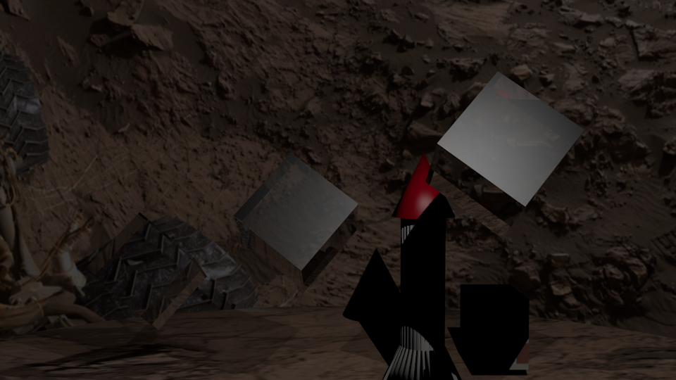

Aight so boom. We're on Mars. There's a rocket. There's a building. But more importantly...there are some floating crystals that look AWESOME because why not!
Let me first start by saying, if you want to do this yourself, you'll probably need to watch some of Prof. Hickey's class tutorials on transparency and extrusion. After you've done that, you can see the following tutorial on how to make the cool cubes. Learn about the Fresnal option and your life will probably change when thinking about surface styles. Oh and use a sky cylinder since it looks cooler than a basic cube. No squares here, chief.
Download the blender file here.
Download the object files here.